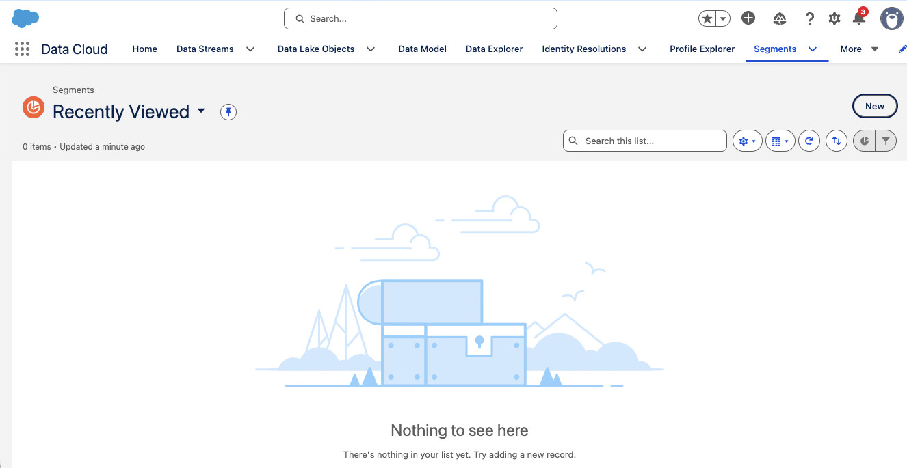

NTO Rewards Context
The Scenario: Northern Trail Outfitters has launched NTO Rewards - a loyalty program for outdoor enthusiasts. Members earn points on purchases, unlock tier benefits (Bronze → Silver → Gold), and can participate in Engagement Trails (gamified challenges).
Your Challenge: NTO's customer data lives in Sales Cloud (Contacts, Leads, Orders). Their loyalty data lives in Salesforce Loyalty Management (Members, Tiers, Points, Promotions). You need to unify this data so marketing can target and personalize based on both customer AND loyalty information.
🎯 What You'll Learn
Data Streams
How customer and loyalty data flows into Data Cloud
Identity Resolution
Creating Unified Individuals from disparate records
Unified Individual
The foundation of all MC Next marketing
Loyalty Data Model
Understanding Loyalty Program Member DMO and relationships
Understanding the Data Foundation
Required • 45 minutes
The Five Key Concepts
Before we dive into the hands-on labs, let's understand the foundation that powers MC Next marketing:
Data Streams
Data Streams are the pipelines that bring data into Data Cloud. For NTO, we have multiple streams:
- CRM Data: Contacts, Leads, Accounts, Orders from Sales Cloud
- Loyalty Data: Program Members, Tiers, Points, Promotions from Loyalty Management
- Behavioral Data: Web activity, email engagement, purchases
DLO vs DMO (Data Lake Object vs Data Model Object)
DLO (Data Lake Object): Raw data as it first lands in Data Cloud - a 1:1 copy of the source.
DMO (Data Model Object): Cleaned, standardized, mapped data ready for use.
Identity Resolution (IDR)
Identity Resolution is the process that identifies which records represent the same person and links them together.
Example: Sarah Johnson might appear as:
- A Contact in Sales Cloud (sarah.johnson@email.com)
- A Loyalty Member (Member ID: LM-12345, same email)
- A website visitor (cookie ID: ABC123, same email)
IDR says "These are all the same person!" and creates a Unified Individual.
Unified Individual
The Unified Individual is the single, consolidated view of a person across all your systems. It's what you'll segment on and send to in MC Next.
Name: Sarah Johnson
Email: sarah.johnson@email.com
Last Purchase: 2026-04-15
Member ID: LM-12345
Tier: Silver
Points: 2,450
Individual DMO & Loyalty Program Member DMO
Individual DMO: The source person record (Contact, Lead, etc.)
Loyalty Program Member DMO: The loyalty-specific data for that person
These are related DMOs. When you build segments and Data Graphs, you'll navigate these relationships to pull in both customer and loyalty data.
📺 Watch: Data Foundation Overview (10 min)
Before the lab, watch this video explanation of Data Streams, Identity Resolution, and the Unified Individual.
🎥 Video: Data Cloud Fundamentals for MC Next
Note: Link to existing Vidyard video or create placeholder
View NTO's Data Streams & Identity Resolution
Hands-on • 30 minutes
🎯 Your Mission
Explore how NTO's customer and loyalty data flows into Data Cloud, and see Identity Resolution in action creating Unified Individuals.
- View Data Streams for CRM and Loyalty data
- Understand Identity Resolution ruleset
- Query Unified Individual DMO to see 500K NTO Rewards members
📋 Step-by-Step Instructions
Navigate to Data Cloud Setup
From the App Launcher, search for and select "Data Cloud".
You'll land on the Data Cloud home page. Click the gear icon in the top right to access Data Cloud Setup.

App Launcher with Data Cloud highlighted
View Data Streams
In Data Cloud Setup, navigate to Data Streams in the left sidebar.
You'll see a list of all data streams configured for NTO. Look for:
- Salesforce CRM: Bringing in Contacts, Leads, Accounts, Orders
- Loyalty Management: Bringing in Loyalty Program Members, Tiers, Points

Data Streams configuration page showing active streams
Click on the Salesforce CRM stream to see details:
- Which objects are being synced (Contact, Lead, Account, etc.)
- Refresh frequency (how often data syncs)
- Field mappings

CRM Data Stream showing Contact and Lead objects
Review Identity Resolution Ruleset
In Data Cloud Setup, navigate to Identity Resolution.
Review the ruleset configured for NTO. You'll likely see a rule like:
Logic: If Contact.Email = Loyalty_Member.Email → Same person
This is how Data Cloud knows that Sarah Johnson the Contact and Sarah Johnson the Loyalty Member are the same person.

Identity Resolution ruleset showing Email matching rule
Query the Unified Individual DMO
Now let's see the result: Unified Individuals!
From Data Cloud, navigate to Query in the left sidebar.
Run this query:
FROM UnifiedIndividual__dlm
LIMIT 10

Query workbench with UnifiedIndividual query
You should see a list of NTO customers. Each row is a Unified Individual - a person who may have records across multiple systems.

Query results showing 10 Unified Individuals
🎉 Lab 1 Checkpoint
Before moving to Lab 2, verify you can answer these questions:
- ✓ What are the two main Data Streams NTO has configured?
- ✓ How does Identity Resolution know two records are the same person?
- ✓ What is a Unified Individual?
- ✓ Can you see NTO's customer data in the Query results?
Explore NTO's Loyalty Data
Hands-on • 30 minutes
🎯 Your Mission
See how Loyalty Management data integrates with customer data. You'll explore the Loyalty Program Member DMO and see tier, points, and enrollment data.
- View Loyalty Program Member DMO structure
- Query loyalty data (members, tiers, points)
- Understand relationship between Individual and Loyalty Member
📋 Step-by-Step Instructions
View Loyalty Program Member DMO
In Data Cloud, navigate to Data Model in the left sidebar.
Search for "Loyalty Program Member".
Click on it to see the DMO structure. Key fields to notice:
- Member Tier: Bronze, Silver, or Gold
- Points Balance: Current loyalty points
- Enrollment Date: When they joined NTO Rewards
- Member Status: Active, Inactive, etc.
- Lifetime Value: Total spend as a loyalty member

Loyalty Program Member DMO showing tier, points, and other fields
Query Loyalty Member Data
Go back to the Query interface. Run this query:
FROM LoyaltyProgramMember__dlm
WHERE MemberTier__c = 'Gold'
LIMIT 10
This shows you NTO's Gold tier members - the most valuable loyalty members!

Gold tier members with points balance and enrollment date
Try another query to see tier distribution:
FROM LoyaltyProgramMember__dlm
GROUP BY MemberTier__c
This shows you how many members are in each tier (Bronze, Silver, Gold).
See Customer + Loyalty Data Together
Now for the magic - let's see customer data AND loyalty data unified!
This requires joining the Individual DMO with Loyalty Program Member DMO:
i.FirstName,
i.LastName,
i.Email,
lpm.MemberTier__c,
lpm.PointsBalance__c
FROM Individual__dlm i
JOIN LoyaltyProgramMember__dlm lpm
ON i.Id = lpm.IndividualId__c
LIMIT 10

Customer names/emails with loyalty tiers and points - fully unified!
🎉 Lab 2 Checkpoint
Verify you understand:
- ✓ What data lives in the Loyalty Program Member DMO?
- ✓ How are Individual and Loyalty Member DMOs related?
- ✓ Can you query to see customer + loyalty data together?
- ✓ Why is this unified view important for marketing?
Deep Dive: Identity Resolution & Loyalty Data
Optional • 30 minutes
Identity Resolution Strategies
The simple "Email Exact Match" rule works for most cases, but enterprise implementations often need more sophisticated approaches:
Exact Match (Recommended Start)
Match on normalized email only. Simple, fast, low false-positive rate.
Use when: You have clean email data and it's the primary identifier.
Fuzzy Matching
Match on name + address even if email differs slightly.
Use when: Same person uses multiple emails (personal + work).
Risk: False positives (matching wrong people).
Custom IDs (LPID)
Some enterprises use their own master person IDs.
Use when: You have mature MDM system (e.g., Informatica).
Benefit: No fuzzy logic needed - you control matching.
Loyalty Data Model Deep-Dive
The full Loyalty Management data model includes several related DMOs:
- Loyalty Program Member: The member profile (tier, points, status)
- Loyalty Ledger: Points transaction history (earned, redeemed)
- Loyalty Promotion: Engagement Trails and campaigns
- Loyalty Promotion Enrollment: Which members are in which trails
- Loyalty Promotion Activity: Individual activity completions
- Loyalty Voucher: Rewards and coupons
When building Data Graphs and segments, you'll navigate these relationships to access the data you need.
Multi-Program Considerations
NTO currently has one loyalty program (NTO Rewards), but some enterprises run multiple programs:
- Example: NTO Retail Rewards + NTO Pro (B2B program)
- Challenge: Same person could be a member of both
- Solution: Filter by Program Name in all queries and segments
Historical Data Considerations
When migrating from a legacy loyalty platform:
- Import historical points transactions (for accurate LTV)
- Preserve tier history (when did they achieve Gold?)
- Migrate past promotion participation
- Consider data retention policies (do you need 5 years of history?)
For Implementation Teams
Optional • 15 minutes
Discovery Questions for Customers
When scoping a customer's data foundation, ask:
Why it matters: Identity Resolution can take 4-24 hours on first run for large datasets (10M+).
Why it matters: Migration from legacy loyalty platforms requires data mapping and historical import strategy.
Why it matters: Determines Identity Resolution rule strategy.
Why it matters: Requires program-scoped segmentation and data model considerations.
Timeline Considerations
| Activity | Typical Duration | Notes |
|---|---|---|
| Data Stream Configuration | 1-2 days | Includes field mapping and testing |
| Initial Identity Resolution Run | 4-24 hours | Depends on volume (1M vs 10M records) |
| Loyalty Data Integration | 2-3 days | Includes historical transaction import |
| Data Quality Validation | 1-2 days | Check match rates, missing data, etc. |
Common Pitfalls & How to Avoid
Pitfall: Poor email data quality
Symptom: Low Identity Resolution match rates
Solution: Clean email data in source system first. Use Data Cloud validation rules.
Pitfall: Missing loyalty member linkage
Symptom: Loyalty members don't match to CRM contacts
Solution: Ensure email field is populated on Loyalty Program Member records. Check case sensitivity.
Pitfall: Not accounting for IR latency
Symptom: New loyalty members don't appear in segments immediately
Solution: Set expectations that IR runs every 4-24 hours. For real-time needs, use Individual DMO (not Unified Individual) in Release 262+.
When to Escalate
- Data quality issues: If match rate is below 80%, engage Data Cloud architect
- Complex MDM scenarios: If customer has Informatica or other MDM, engage Professional Services for integration strategy
- Multi-cloud loyalty: If loyalty spans multiple Salesforce orgs, engage architecture team
Module 1 Quiz
5 minutes
Test your understanding before moving to Module 2:
1. What is the difference between a DLO and a DMO?
2. What does Identity Resolution do?
3. Where does NTO's loyalty tier and points data live?
4. True or False: If data isn't in Data Cloud, it won't be available in MC Next.
🎉 Module 1 Complete!
Congratulations! You've built the data foundation for NTO Rewards marketing.
✅ What You Learned
- How Data Streams bring customer & loyalty data into Data Cloud
- How Identity Resolution creates Unified Individuals
- The difference between DLO and DMO
- How loyalty data (tiers, points) integrates with customer data
🛠️ What You Built
- Explored NTO's Data Streams (CRM + Loyalty)
- Reviewed Identity Resolution ruleset
- Queried Unified Individual DMO
- Viewed unified customer + loyalty data